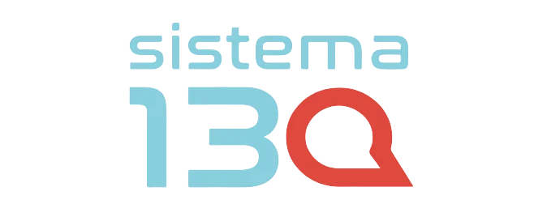

Explora la app.
Recorre la interfaz original. Los formularios, el chatbot y los documentos externos se sustituyen por ejemplos; no se envían denuncias ni se realizan llamadas.

Una experiencia de navegación para conocer el proyecto.
La app se carga al iniciar.Versión de portafolio · Servicios externos desconectados